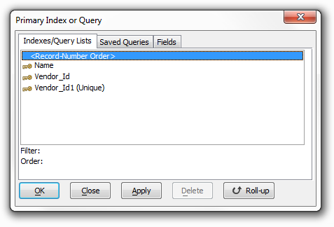
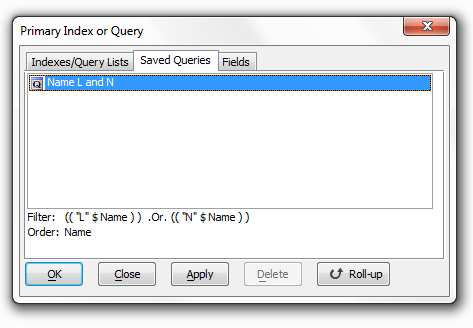
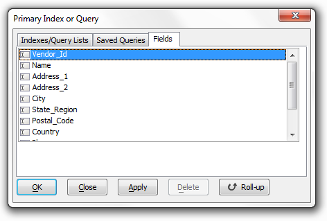

Primary Index or Query Dialog Box
Clicking Query > Select Index/Query displays the Primary Index or Query dialog box, from which you can select indexes and run saved queries. The Primary Index or Query dialog also provides a quick way to determine the names, filter expressions, and order expressions of index tags and saved queries. While displaying a form or browse, click Control I to display the dialog box.
The Index/Query Lists tab lists the defined indexes and last four queries run. as you select each index, Alpha Anywhere displays its key expression (Order) and associated filter criteria (Filter). The Fields tab lets you select a field. The data will then be ordered by that field.

The Saved Queries tab lists your saved queries. You can apply any query by selecting it from the list and clicking Apply.

The Fields tab lists the fields of the table or set.

All queries have underlying filter and order expressions, whether you create them using a Genie or the Expression Builder. When you run a query, Alpha Anywhere selects an existing index (if an index definition matches the query definition) or builds a new query list.
See Also